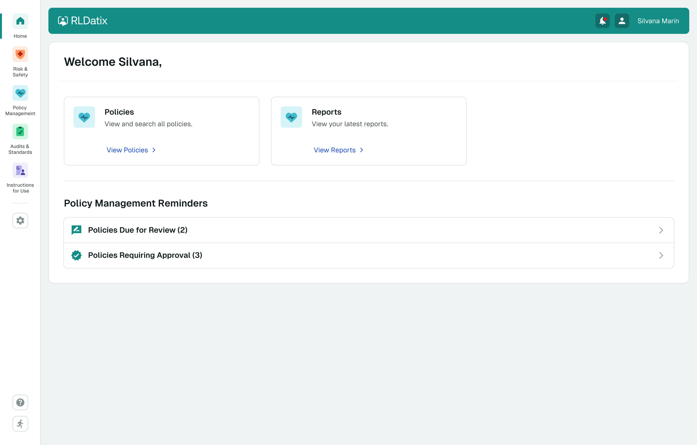
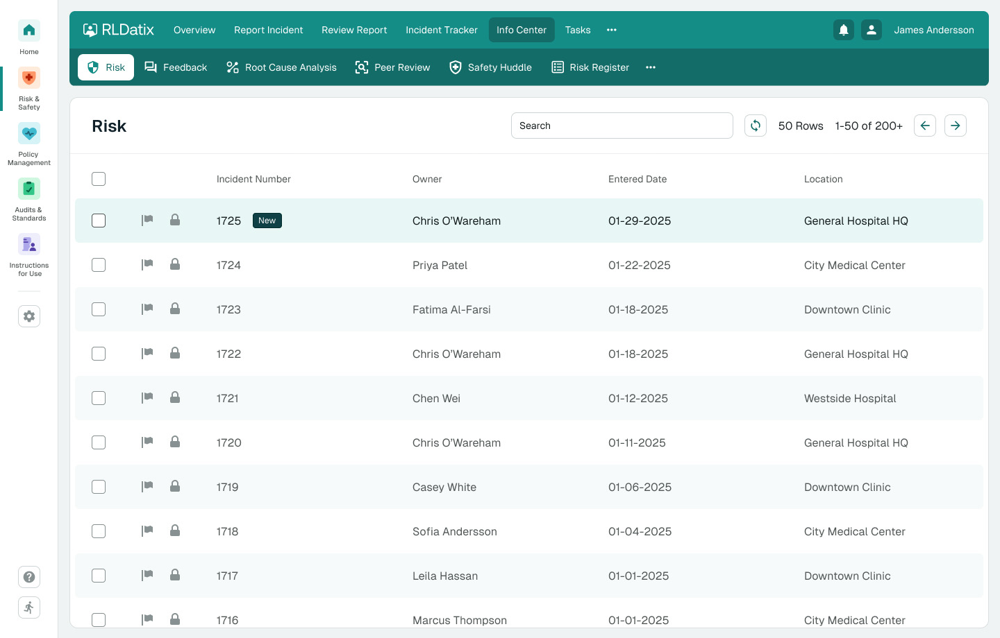
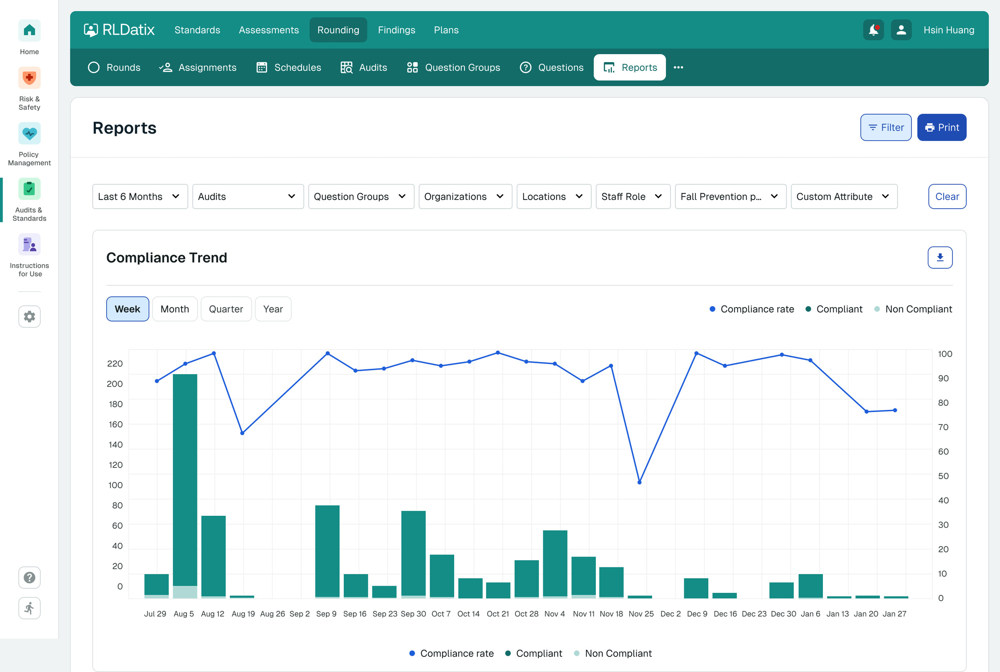
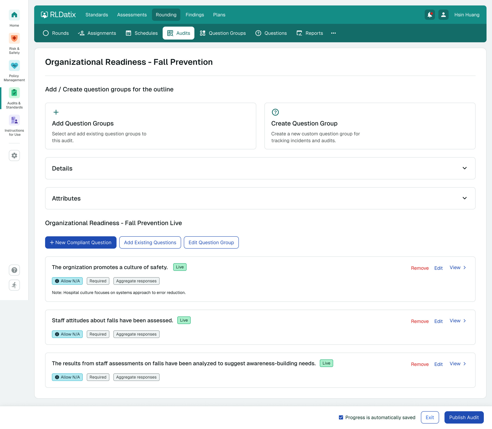
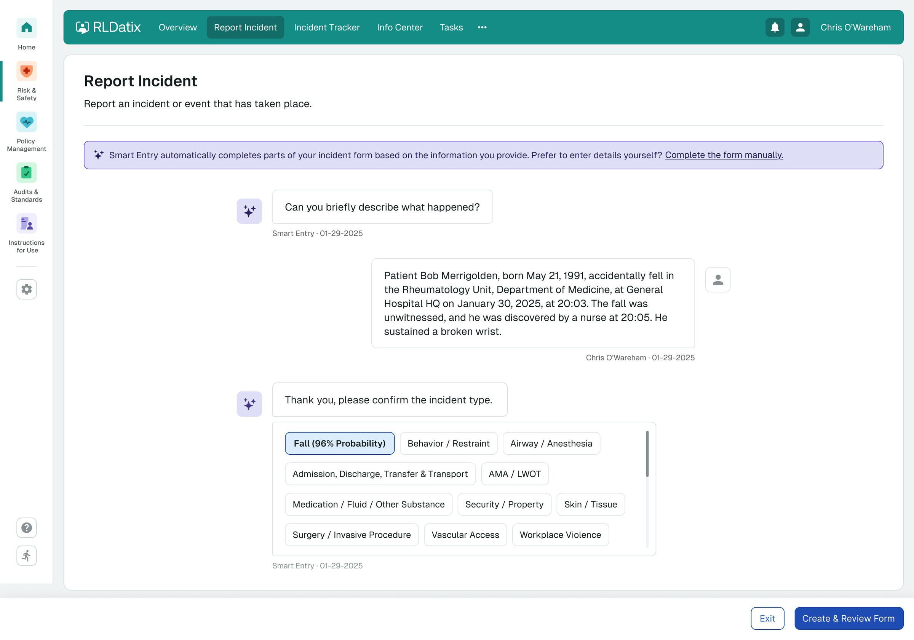
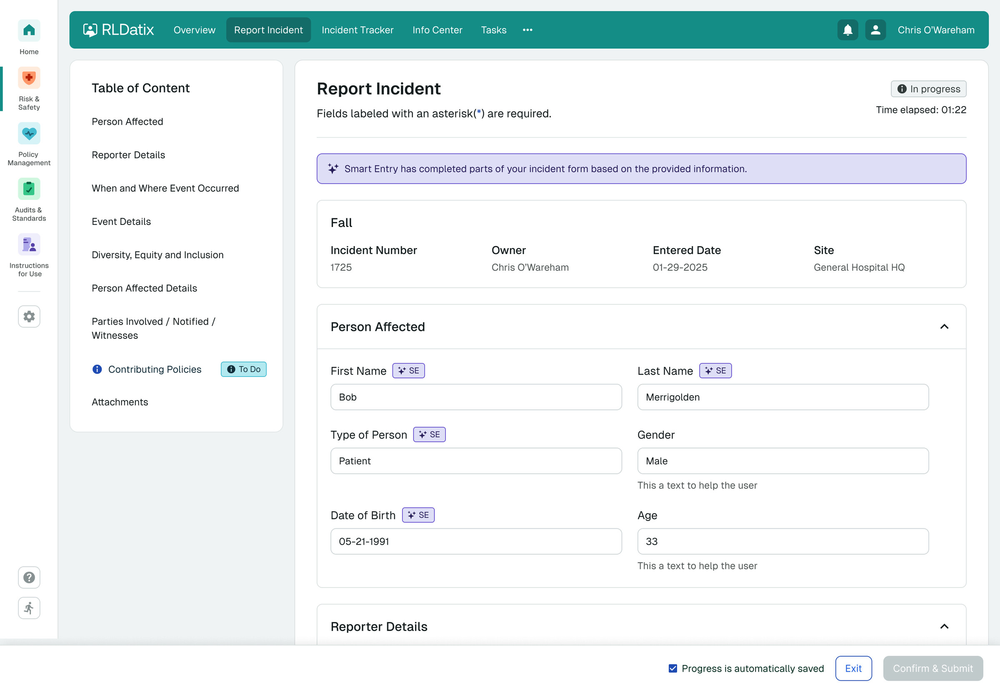

RLDatix serves more than 10,000 healthcare organizations. Their platform had grown through acquisitions — four products, four interfaces, four mental models. We were brought in to design the future where they felt like one, and to build the design system that now powers the entire ecosystem.
RLDatix had built a market-leading position in healthcare governance through organic growth and acquisitions. By 2025 the platform spanned Risk & Safety, PolicyStat, Onesource, and Assure & Survey — together covering the full risk lifecycle for hospitals, but each carrying its own interface, terminology, and patterns.
Customers using more than one product had to learn each separately. New buyers saw a fragmented experience. Internal teams couldn't share components or onboarding flows.
Before we joined, an internal team had attempted a first version. The work had quality but was solving the wrong problem — it treated unification as a styling exercise, not a structural one.
We took the brief back to first principles. The question wasn't "how do we make four products look the same" — it was "what is the shared mental model a healthcare leader uses to navigate risk, and how does the platform mirror it?"
We worked alongside RLDatix's product owners and engineering leads — interviewing stakeholders across all four product lines to understand how clinicians, risk managers, and compliance officers actually moved through the system.
From there we built Nova — the design system that would carry the unified platform — and applied it to the workflows with the highest visibility at Summit: incident reporting, policy management, compliance audits, and the AI-assisted Smart Entry that became the keynote centerpiece.
Two designers worked with two RLDatix engineers in tight cycles: design Monday, prototype by Wednesday, review Friday.
A policy editor that holds an entire SOP — definitions, procedures, comments, attachments, standards, revision dates and approval signatures — without losing the reader. Scroll inside the window to explore the full screen.

A policy reviewer sees policy work; a risk reporter sees incidents. The shell stays consistent — the priorities adapt. The same component library renders both views; only the data and tasks differ.

Risk managers read hundreds of incidents per week. The Info Center pattern — built around a scannable table with consistent metadata — became the foundation for every list view in the platform.

A reporting pattern built to be readable in a printed audit binder, in a board meeting, and in a Joint Commission survey window. One chart, layered metadata, defensible numbers.

Setting up a compliance audit used to take a knowledgeable admin an hour. With Nova patterns — question groups, reusable templates, live previews — it now takes minutes.
A clinician describes what happened in plain language. Smart Entry parses the narrative and pre-fills the structured incident form. We designed the conversation to keep the human in control: every AI inference is visible, editable, and reversible.


RLDatix
Healthcare governance
Chicago / London
Belen Longhi
Lead product designer
+ 1 senior designer
Product owners
2 engineers
Tight weekly cycles
POC: Jan – Jul 2025
Engagement: 2024 – 2025
Deployed in production
Rebuilding the buyer's workflow across five European markets around a single planning surface.